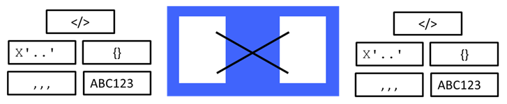

Format Transformation Patterns

The Format Transformation patterns category provides simple integration solutions that transform between formats when sending and receiving data. You can integrate client applications that use different protocols and message formats. Each pattern instance involves a single input format and a single output format. In total there are 20 patterns in this category providing every combination of input and output from the following list of formats: BLOB, Delimited, FixedLength, JSON and XML.